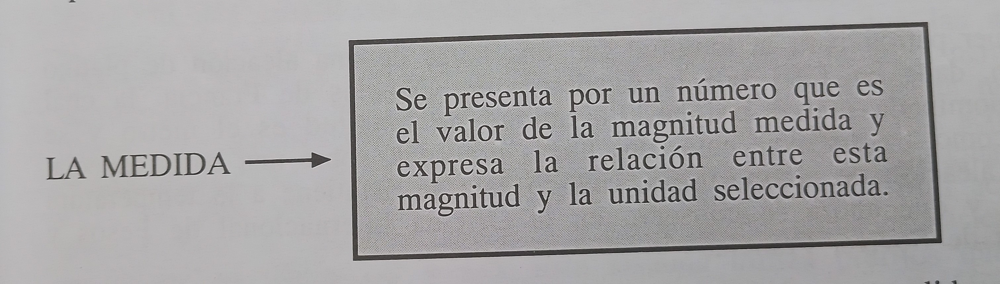

La medición: un proceso de comparación
El proceso de medir es comparar una magnitud con otra de su misma especie que se ha sleccionado como unidad.

| Cantidad | Unidad | abreviatura |
|---|---|---|
| Longitud | Metro | m |
| Tiempo | Segundo | s |
| Masa | Kilogramo | kg |
| Corriente | Ampere | A |
| Temperatura | Kelvin | °K |
| Cantidad de Sustancia | Mol | mol |
El proceso de medir es comparar una magnitud con otra de su misma especie que se ha sleccionado como unidad.
Cuando se efectúa una operación de medida, se selecciona una unidad coveniente. Las magnitudes fundamentales de la física son: la longitud, la masa y el tiempo. Los sitemas de unidades se diferencian por sus unidades fundamentales.
En 1790, los científicos franceses crearon el Sistema Métrico Decimal, el cual se caracteriza por su uso sencillo, debido a que las unidades mayores y menores están relacionadas por múltiplos de 10 a partir de la unidad patrón. Así tenemos que un milímetro en 1/1000 de un metro, un metro tiene 10 decímetros, etc. El Sistema Internacional (SI) es actualmente el más importante sistema de unidades, y está basado en el Sistema Métrico Decimal, pero sus unidades han sido definidas en forma más actualizada obteniéndose las unidades derivadas a partir de las unidades básicas, según se ve en las tablas 1-2 y 1-3. Este sistema utiliza prefijos que pueden aplicarse tanto a unidades de longitud, como también de volumen, de masa o de cualquier otra unidad del Sistema Métrico. Así por ejemplo: un r kilolitro (kl) equivalente a 1000 litros; un decilitro (dl) equivale 1/10 de un litro; un kilómetro equivale a 1000 metros, etc.
En este sistema, la unidad de longitud es el pie (ft), la de la masa libra (lb) y la unidad de tiempo es el segundo (s). También pertenece a este sistema la pulgada (in).
En muchos casos en nuestros trabajos se requiere hacer transformaciones de unas unidades a otras. Por ejemplo, un carpintero necesita convertir metros a varas, o un tendero desea convertir kilogramos a libras, o desea convertir kilogramos a libras, o desea convertir pulgadas a milímetros. Así se encuentra también, que por lo general, los estudiantes tiene algunas veces difucultad para aplicar la aritmética correctamente y encontrar la respuesta numérica apropiada a un problema.
El calor y la temperatura son dos cantidades diferentes, a pesar que ambas están esrechamente relacionadas.
La temperatura de una sustancia, es la medida de la energía cinética media de sus moléculas.
El calor es energía interna, la cual está formada por energía cinética y potencial.
Propuesta por Anders Celcius (1701 - 1744), el cual seleccionó como referencia el punto de fusión (o°C) y ebullición (100°C) a una atmósfera de presión, para el caso del agua. La escala Celsius, llamada también centígrada es empleada en el sitema métrico.
Propuesta por Lord Kelvin (1824 - 1907), es llamada escala kelvin o absoluta.Esta escala prolonga el cero en la escala Celcius hasta -273°C siendo este valor conocido como el cero absoluto, donde en la escala de Kevil es igual a 0°K. En el cero absoluto, el movimiento de las moléculas o su energía cinética promedio es cero, y su temperatura debe ser cero. El tamaño de un grado Kelvin es el mismo que el de un grado en la escala Celsius.
La masa atómica de un elemento, es un número que expresa cuantas veces es mayor la masa de un átomo que la unidad de masa atómica (uma).
La masa atómica de un elemento, es la masa atómica del mismo expresado en gramos, y en él hay el mismo número de átomos que en 12.0 g de carbono, 16.0 g de oxígeno, etc.
La masa molecular de una sustancia es un número que expresa cuantas veces es mayor la masa de una molécula de la sustancia que la unidad de masa atómica (uma).
Es la masa molecular de una sustancia expresada en gramos.
Una unidad de masa atómica (uma), se define como 1/12 parte de la masa de un átomo de carbono 12, y es igual a 1.66 x 10^-24 gramos.
Es el número de átomos contenidos en la masa atómica gramo de cualquier elemento o el número de moléculas contenidas en la masa molecular gramo de una sustancia.